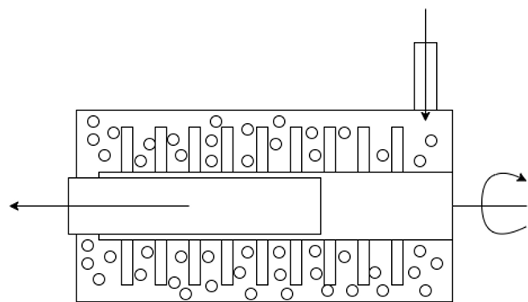
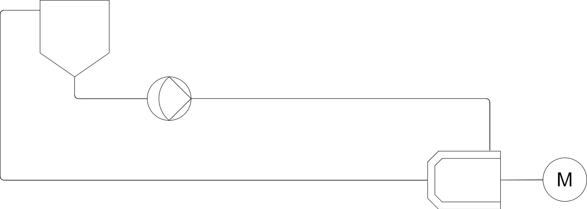
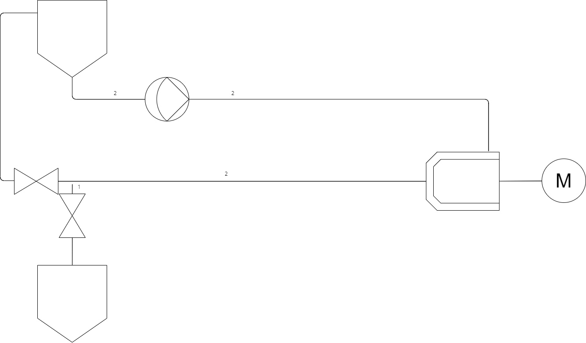
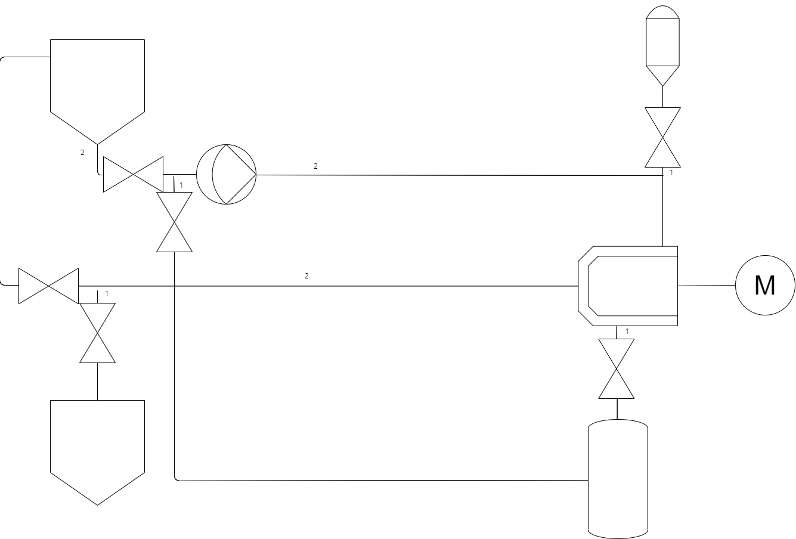
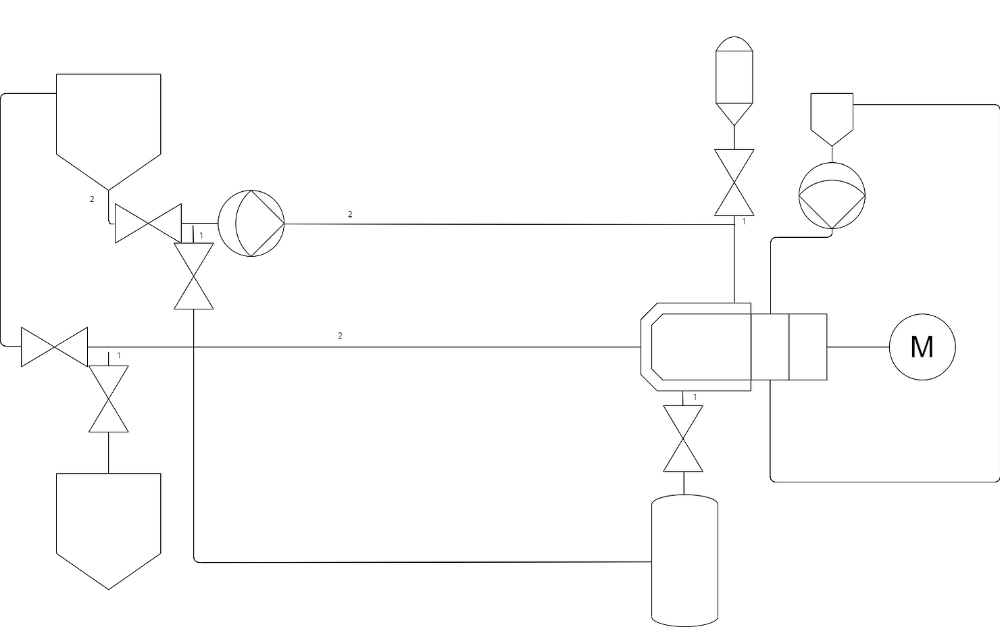
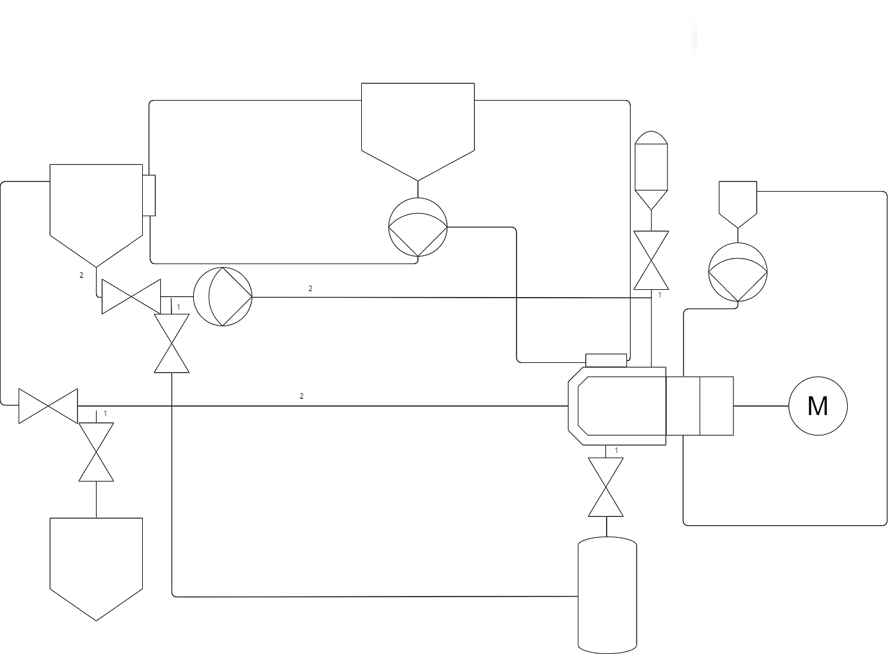

Hopefully you have come to this page as you are interested in finding more out about Wet Bead Milling in the Pharmaceutical Manufacture domain. In this post I will cover the basics all the way through to designing a fully automated milling platform. For those of you who have heard the term but aren’t familiar with the process, a bead mill at its core agitates beads in a chamber filled with product to reduce the particulate size. In the pharmaceutical world, milling is commonly used on products that agglomerate meaning that these products naturally form clumps which in turn reduces the effectiveness of medication, the intent of Milling is to break down these particles into smaller, useable particles. Active Pharmaceutical Ingredients (APIs) that agglomerate typically do so quicker the warmer they are, in turn driving a requirement to reduce the amount of temperature time the product is subjected to.
This in turn drives our requirements for a milling platform that we will design as below:
- System must be capable of milling various pharmaceutical products
- System must be capable of controlling the product temperature for Cold chain products
- System must be capable of reducing manual intervention as much as possible
Designing a wet bead mill
To begin the design of a sterile wet bad mill we first have to start with a mill. A mill agitates beads in a chamber to break down a product into smaller chunks, a cutaway is shown below:

In this example, product enters from the top right and is pushed down the chamber to the left smashing into beads that are agitated by the central rotating agitator in turn breaking down the product into smaller particles. The product is filtered on the outlet allowing product through into the tank without letting beads out from the chamber.
Below you can see the P&ID for the heart of a Wet Bead Mill The chamber as described above with product from a vessel being recirculated using a product pump.
 This heart of a wet bead mill is fairly simplistic on its lonesome, it is the additional complexities that start to build a more vast machine. In this case one requirement is to ensure that as much product as possible can be retrieved without being left in the system post milling. A main factor in this is avoiding system low points where product will sit at the end of a batch by sloping the piping downwards one approach is shown below making use of a final product tank, this tank allows us to better retrieve all product from the system as well as allow for simple draining from the primary tank.

As seen above the second tank can be used to store completed product at the end of a milling cycle. I would like to draw attention to the pipe marked 1, this section of pipe is a dead leg in the recirculation loop whilst milling, as such product can sit uncirculated through the milling process as well as leave a cavity for bacteria, as such it is imperative to the design of a sterile mill to keep deadlegs as small as possible by mounting the deadleg valve as close as possible to the product loop. On the other hand it is also key that product naturally drains out of the loop as such to get the most return out of the loop as well as being key down the line for CIP/SIP drainability.
A final thing to note that is not shown in the design above is that continually agitating ultra hard beads in a stainless steel chamber slowly breaks down the stainless steel as well as the product, as such not only is it key to monitor the condition of your agitator and chamber wear parts, it is also key to consider the contamination of product with small stainless steel chippings. A final filter should be used to prevent particulates entering the final product as well as the use of a magtrap to catch larger particles of steel before damaging a final filter.
One of the requirements for this system for this process are the ability to add and remove beads from the chamber. The added complexity for this is that addition must be possible in a sterile manner.

Continuing on from the previous design, to add beads into the system we can use a separate sterile canister to drop beads into the chamber using the exisiting product loop piping. This requires either a bead sterilisation process adding onto the mill or more commonly a sterile to sterile connection (such as a split butterfly valve) to attach and drop pre-sterilised beads into the sterilised mill. To remove beads is a more complex operation requiring a low point in the chamber to remove beads through, a valve to open and close this is required, again this needs to have a very small dead leg. This valve opens to a separate canister filled with water that recirculates through the product loop to drain out the beads left in the system at the end of a batch.
One complexity in the use of a sterile wet bead mill is maintaining a sterile chamber whilst using a rotating agitator, standard bearings are not designed for either wet operation or sterile environments with a high potential for contaminating the pharmaceutical product this is not acceptable. The most modern way of getting around this issue is the use of a magnetic drive that couples the agitator through the back of the chamber to a drive motor although historically these have required mechanical seals pressurised with WFI (Water For Injection) grade water due to their tendency to leak.

An example of this can be seen above where a seal reservoir recirculates water through the mechanical seal using a pump. This is a good time to mention that for many reasons I will not be showing off designs all the way down to supplies (Such as WFI, CA, Steam etc) and only detailing the basic theory of sterile bead milling.
As previously discussed a common requirement for pharmaceutical products that require milling is temperature control. In particular, product cooling to prevent agglomeration although controlling heat instead is identical with inverted control. In this system the two key locations where product is changed and stored are the chamber where milling is occuring and heating the product and the storage tank. For both of these systems a jacket should be applied with appropriate heating or cooling flow/temperature control.

This is the overall basis of a sterile milling platform, of course, there is a requirement to design the control of these systems and monitoring of key values as well as the implementation of CIP/SIP process of which I will not detail here to prevent any copyright/oversharing of confidential information, if you wish to understand the design of sterile milling, would like to collaborate on anything or think I may have missed any useful information feel free to reach out and I’d be glad to help.